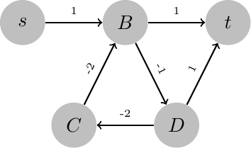
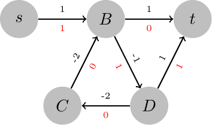
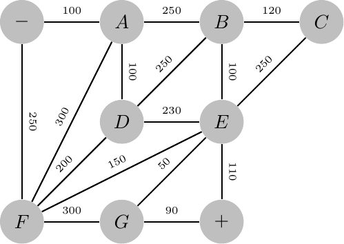
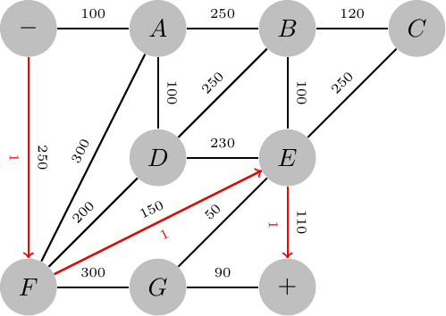
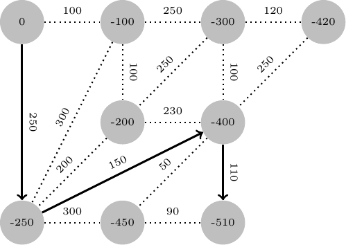
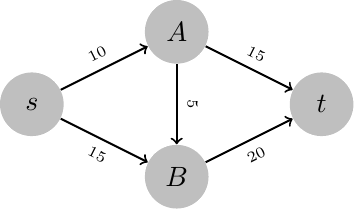
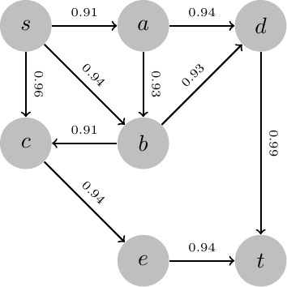
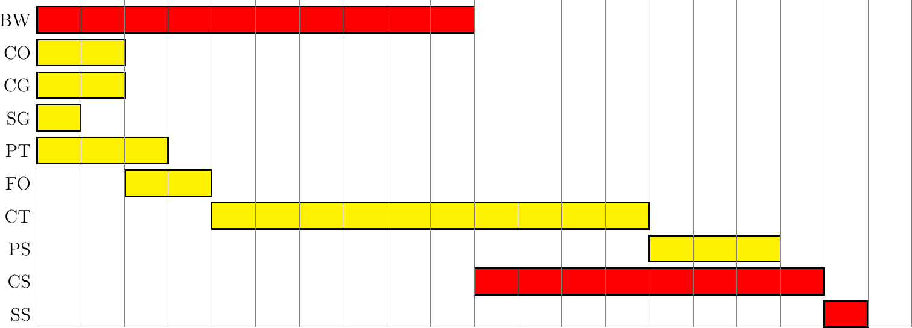
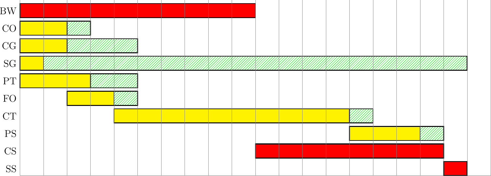

\(\newcommand{\R}{{\mathbb{R}}}\) \(\newcommand{\Z}{{\mathbb{Z}}}\) \(\newcommand{\N}{{\mathbb{N}}}\) \(\newcommand{\var}[1]{{\color{red}{\mathbf{#1}}}}\) \(\newcommand{\param}[1]{{\color{blue}{#1}}}\) \(\newcommand{\mathsc}[1]{{\normalfont\textsc{#1}}}\) \(\def\sc#1{\dosc#1\csod}\) \(\def\dosc#1#2\csod{{\rm{#1{\rm\small #2}}}}\) \(\newcommand{\set}[1]{{\sc#1}}\) \(\newcommand{\mathvar}[1]{\var{#1}}\) \(\newcommand{\half}{{\small{\frac{1}{2}}}}\)
7. Shortest (Minimum Cost) Path Problems¶
Consider a special case of the minimum cost flow problem in which
there are two special nodes \(s, t\), called respectively source and terminal (or origin and destination);
the balance is +1 for the source node, -1 for the terminal one, zero in all the other nodes;
the lower bound for the flow is everywhere 0
the upper bound is \(\infty\) (hence the corresponding constraint can be omittes).
This special case is called minimum cost path problem and can be represented as follows:
In this minimum cost flow problem a single unit of flow starts from the source node and goes to the destination node.
Based on the scheme already used, the minimum cost path model can be represented as follows:
- model
Minimum cost path
\({V}\) nodes of the graph;
\(E \subseteq \set{V} \times \set{V}\): set of arcs
\(\param{s} \in V\): source, or origin;
\(\param{t} \in V\): terminal, or destination; \(s\) and \(t\) are symbolic parameters, not numerical ones.
\(\param{c}_{ij}\): “cost” associated with one unit of flow traversing arc \((i, j) \in E\); it is not necessarily a monetary cost: it might be travel time, an index of discomfort or of danger, the length, fuel consumption, difficulty, slope, …
\(\var{f}_{ij}\): flow along arc \((i, j) \in E\);
Flow conservation:
\begin{align*} \sum_{j: (v, j) \in E} \var{f}_{vj} - \sum_{i: (i, v) \in E} \var{f}_{iv} = \left \{ \begin{array} {rl} 1 & \textrm{if } v = \param{s} \\ -1 & \textrm{if } v = \param{t} \\ 0 & \textrm{otherwise} \end{array} \right. \qquad \forall \, v \in V \end{align*}Flow non-negativity:
\begin{align*} \var{f}_{ij} \geq 0 \qquad \forall \, (i, j) \in E \end{align*}
Cost minimization:
\[ \min \sum_{(i, j) \in E} \param{c}_{ij} \var{f}_{ij} \]
An example of implementation of the model is given in the following, even if, we recall, this problem is a special case of the minimum cost flow problem and, thus, can be easily solved using the generic model formulation.
set NODES ordered;
set ARCS within (NODES cross NODES);
param Cost{ARCS};
param S symbolic in NODES;
param T symbolic in (NODES diff {S});
var f{ARCS} >= 0;
minimize cost: sum{(i,j) in ARCS} Cost[i,j] * f[i,j];
subject to Conservation {n in NODES}:
sum{(n,j) in ARCS} f[n,j]
- sum{(i,n) in ARCS} f[i,n] =
if (n = S) then +1
else if (n = T) then -1
else 0;
# to be done
7.1. The problem of arcs with negative cost¶
Before going into more details on this model and its many applications it is important to check whether this model is indeed a correct one. By this we mean that it is important to check whether the optimal solution to this model is indeed an optimal path. We will see that in some cases the optimal solution might not be a path or it might be sub-optimal. These defects might however hapen only when some arc has negative cost.
A path in a directed graph is a finite sequence \(v_1, (v_1,v_2), v_2, (v_2,v_3), v_3,\ldots, v_k\) such that
This sequence is composed of nodes and arcs; when the graph has no parallel arcs, it can be represented more simply and without ambiguity as a finite sequence of nodes \(v_1, v_2, \ldots, v_k\) where it is understood that \((v_h,v_{h+1}) \in E\), that is, every pair of consecutive nodes in the path is an arc in the graph. It is not granted, a priori, that the optimal solution of the above model is indeed a path.
In fact, the model is a special case of the minimum cost flow and thus, being the right hand side of the model integer, it is immediate to deduce that all basic solutions and, in particular, an optimal one, will be integer. It is not granted that an optimal solution, when it exists, is \(binary\). This fact is not a problem in itself, as a flow larger than one might represent a flow passing more than once trough an arc. However this is the sign of possible difficulties, as we are going to show now.
Consider the following graph, where the label on each arc represents the cost:

Here a directed cycle exists in the graph: by this we mean a directed path with the same start and end node. In this case, the node sequence \(A,B,C,A\) corresponds to a directed cycle. Although it is evident that the minimum cost path in the graph is \(s,A,B,t\), with total cost 3, sub-optimal paths exist, like, e.g., \(s,A,B,C,A,B,t\). The flow along this path will be non binary: one unit on \((s,A),(B,C), (C,A), (B,t)\), but two units along \((A,B)\), corresponding to two passages along this arc. It is easy to imagine how, going through the cycle more than once, other non binary feasible solutions might be found. Of course, in this case, it will be costly to traverse the cycle, so an optimal solution will be acyclic, i.e., it will not contain any cycle with positive flow.
Assume now that, as an example, the cost associated to arc \((B,C)\) is \(-2\);

Now the situation is different because, thanks to this negative cost, the overall cost of the cycle \(A,B,C,A\) is null. Thus assigning flow to the cycle is possible, at no additional cost. As a consequence, there exist optimal solutions which include a cycle and, thus, have non binary flows. The cyclic solution \(s,A,B,C,A,B,t\) has the same cost as the optimal one and, thus, is optimal. It can be proven, however, that in this problem feasible solutions which contain cycles are not basic solutions: linear independence of the columns associated to arcs with positive flow correspond to the absence of cycles (here with cycle we consider generic ones, i.e., even not directed ones or, in other words, closed paths which, after possibly a few changes in the direction of some arcs, turn into a directed cycle). Thus, even if an optimal cyclic solution might exist, the fundamental theorem of linear optimization grants that at least an optimal acyclic solution exists. And most of the commonly used linear optimization algorithms will return such an optimal basic solution.
However, going further with the example, assume now that the cost of arc \((B,C)\) is, say, \(-3\): now, going through the cycle \(A,B,C,A\) will “cost” \(-1\) - in other words, the cycle gives us a positive gain. It is evident, now, that it is worth going through the cycle. If we traverse the cycle 1, 2, 3 times, the gain will be 1, 2, 3,… From this, it immediately follows that the minimum cost path problem in this case becomes unsolvable or, more precisely, unbounded. Even in this case the linear optimization formulation given above is correct and trying to solve that model in this case will correctly detect the unboundedness of the problem. Difficulties however arise in a slightly different situation. Consider the following example:

Here there is a unique, thus optimal, path \(s,A,t\) whose cost is 2. However, the linear optimization model turns out to be unbounded, as it is possible to assign any positive value to the arcs composing the cycle, without violating any constraint. Thus the linear optimization model does not correctly represent the minimum cost path problem in this case, as a consequence of a negative cost cycle in the graph. We might think that bounding the flow over each arc to 1 might solve the problem, but this is false. Indeed, assigning a finite upper bound to each arc will make the problem bounded. However, in this case, the optimal solution would assign unit flow to \((s,A), (A,t)\) but also to \((B,C), (C,D), (D,B)\), thus returning an incorrect solution with an incorrect total cost. In this case the solution, although incorrect, contains the minimum cost path. Unfortunately, this is not the case, in general. Consider the following example:

Bounding the flow on each arc to 1 unit as a maximum, any linear optimization software would return the following optimal solution, consisting in one unit of flow on each arc, except arc \((D,t)\), with total cost \(-3\) (the flow is reported in red below each arc):

However, the minimum cost path is \(s,B,D,t\),(cost: 1) which is not contained in the linear optimization solution:

Concluding this section, it can be observed that problems arise when a negative cost cycle is included in the graph. In these cases the linear model might not be correct and special care has to be taken in order to avoid solution which include cycles. This can be done, as it will be seen in chapter chapter:tsp when presenting the Traveling Salesperson Problem. But the inclusion of constraints to avoid cycle will come at a huge computational cost. It can be proven that, while the minimum cost path is “easy”, in the sense that it admits a solution time which grows at most polynomially with the size of the problem, when negative cycles are present the complexity becomes much higher and no polynomial time algorithm is known, nor it is likely to be found in the future.
It is also important to recall, however, that in the vast majority of practical cases the linear model will be a correct representation of the problem. Two wide classes of cases in which the model is granted to be correct are:
graphs with non negative arc costs
acyclic graphs, even with negative cost arcs
In the two cases above it is evident that no negative cost cycle can exist, and, thus, the linear model will be correct for the minimum cost path problem.
Going back to the application of this model, let us consider the following application.
- application
Minimal resistance path in an electrical network
Consider the following minimum cost path problem:

This graph is undirected, but we can considered it as a directed graph in which each edge corresponds to two arcs, in opposite directions, each with the same cost as displayed. Assume we wish to find the minimum cost path from node \(-\) to node \(+\). This network might be an electrical one and we are interested in finding the minimum total resistance path in the network, assuming the labels of each edge are the resistance associated the connection.
Solving this problem either with a specialized shortest path algorithm or with a generic linear optimization tool, we obtain the optimal solution as \(-,F,E,+\) with total cost 510.

7.1.1. Dual of the minimal cost path model¶
In this section we analyze the dual of the linear model for the minimum cost path problem (assuming it correctly represents the minimum cost path problem). Let us denote by \(\mathvar{\lambda}_i\) the dual variable associated to node \(i\) of the graph. The dual problem turns out to be
Consider the previous example on an electrical network. Dual variables can be thought of as node potentials. If a voltage is applied between the two special nodes \(+,-\), the objective function of the dual corresponds to the maximization of the potential difference, or tension between the source and the terminal nodes (negative and positive nodes). Constraints can be interpreted as limits on the maximum allowable tension, \(\param{c}_{ij}\). at the extremes of each arc \((i,j)\). Thus the dual of the shortest path problem is a problem of maximum tension with bounds on the tension at each arc. It can be seen that node potentials never appear isolated in the constraints or the objective; in each expression, the difference between two potential always appear. Thus each feasible solution, and in particular, an optimal one, can always be modified by adding a constant to each potential (dual variable). Seen in a different way, the dual problem has a “free” variable, which can be set to an arbitrary value. As an example, we might chose any node and fix its potential to zero (or ground). This redundancy in the dual variables is connected with a “primal” redundancy: a balance constraint can be arbitrarily chosen and deleted from the model, without changing the set of feasible solutions. It is not difficult to show that, if, in the primal, the balance constraint associated to node \(i\) is canceled then in the dual the optimal solution will correspond to one in which \(\mathvar{\lambda}_i = 0\).
In the example above, an optimal solution to the dual problem is reported in the following figure:

From this solution it is also possible to notice that, as a consequence of complementarity, on all arcs on which a positive (primal) flow is assigned, there cannot be any slack in the dual constraint. In particular we can observe that
An alternative interpretation of the dual of the minimum cost path problem is a mechanical one. Consider a physical model of a graph, made of strings, in which nodes are knots and arc lengths are proportional to arc costs. Considering the dual, as a maximum tension problem, it is possible to think to an analogical solution procedure, in which nodes \(s\) and \(t\) are pulled in opposite directions as much as possible, taking into account each arc’s length. When a maximum tension is reached, an optimal, minimum length path, will be in tension. Consider the following example:

It is easy to see that the minimum cost path is \(sAt\) and that assigning potential 25 to the node \(s\), 15 to \(A\), 20 to \(B\) and 0 to \(t\), an optimal dual solution is obtained. This solution can be represented with the string model as in the next figure:

It is seen that, as prescribed by complementarity, the optimal path is “in tension” and no slack exists between adjacent nodes along the optimal path: their potential difference, which, in this case, is simply their distance, is equal to the right hand side (the cost). On the other end, nodes not on the optimal path (node \(B\) in the example) have incident arcs whose length can be, and in the example is, strictly greater than their cost (length).
7.1.2. Applications of the minimum cost path model¶
Many problems, apparently unrelated to minimum cost paths, can be traced back to this scheme. In this paragraph ne we will analyze a few of them.
- application
Maximum reliability path
Consider a graph representing, as an example, a road network. Assume that a statistics on the \(reliability\) of each arc is available. The term “reliability” might have different definitions in various contexts. Here we assume that the reliability of an arc is (an estimate of) the probability that the arc can be “safely” traversed. In a road arc, it can be linked to incidentality and defined as one minus the incident rate of the road. In a telecommunication network, it might be the probability of the connection being available, and so on. Let \(\param{p}_{ij}\) the (estimate of) the probability that \((i, j)\) can be traversed without accidents (or that it is available for message passing in telecommunication networks). We assume that accidents in different roads are not correlated, and, in particular, that there is stochastic independence between events in different arcs of the graph. This assumption, in road traffic, might be reasonable in situations of light traffic, or in extra-urban roads secondary roads, when accident are mostly due to road conditions and not to, e.g., congestion.
As a consequence of the assumption of stochastic independence, given a set of arcs \(I \subseteq E\), their joint reliability, i.e., the probability that no accident will occur in any of the arcs is given by
The problem of finding a maximum reliability path in a graph can be formulated as follows, where the constraints force basic feasible solutions to be paths:
This, as an optimization problem, is apparently very complex: a product of terms appears in the objective and variables are in the index of the product operator. Moreover, although it is true that constraints associate basic feasible solutions to paths (provided the assumptions connected with the absence of negative cost cycles hold), given the form of the objective it is not granted, a priori, that optimal solutions will be basic ones. Notice also that binary constraints are imposed on all variables, as the integrality property cannot be assume to hold for general problems different from linear network flows.
However a simplification of this formulation is indeed possible, and it will lead to a network flow problem. Recall that in any optimization problem, applying a monotonically increasing function to the objective does not change the location of optima. That is, given a problem
if \(x^\star\) is an optimal solution and \(\phi(\cdot) : \R \rightarrow \R\) is increasing, then \(x^\star\) will be an optimal solution of the problem
and viceversa.
The same applies to maximization problems too. Thus, assuming without loss of generality that no arc exist with 0 reliability, a logarithmic transformation of the objective function can be safely applied. Thus the maximum reliability problem can be equivalently represented as
But now we can observe that binary variable can be used to include or exclude specific terms in a summation and we can transform the problem as follows:
Notice that now binary constraints on the variables have been removed, as this is a pure linear flow model and the integrality of the optimal solution is guaranteed. We can also observe that this problem, when transformed into a minimization one, has non negative costs on each arc, so the optimal solution will be a path:
As an example, consider the following reliability network:

Transforming the problem as explaned and running a minimum cost path solver, the optimal solution turns out to be \(s-b-d-t\) with overall reliability \(0.902286\). This result has been obtained by running a linear optimization solver on the following data:
set NODES := s a b c d e t ;
param S := s ;
param T := t ;
param: ARCS: Cost :=
s a .91 s b .98 s c .96
a b .93 a d .94
b a .92 b d .93 b e .91
c e .94 d t .99 e t .94 ;
let {(i,j) in ARCS} Cost[i,j] := - log(Cost[i,j]);
# to be done
Notice from one side that, through a transformation of the data, the standard shortest path model was used. On the other hand, it is worth recalling that this problem is so special that much more efficient algorithms do exist to solve it to optimality, even for huge dimensional problems. It is out of the scope of this volume to go into these algorithmic details.
Going back to the example, a myopic strategy which starts by choosing the most reliable outgoing arc, in this case, would produce the path \(s-c-e-t\) whose reliability is only \(0.848256\); by the way, such a strategy is not even granted to find a feasible path.
This model finds applications in the field dangerous or highly polluting goods transportation, where minimizing accident probability is a typical objective. In this context, sometimes the objective to be minimized is the expected damage (e.g., the expected number of possibly affected people in case of an accident, or the expected monetary damage in case of an accident). This situation is easier to model, as, after having associated an expected damage to each arc, the overall cost of a path would be just the sum of the expectations on the arcs of the path. Thus a regular minimum cost path is generated. Finally, it is appropriate to remember that often in problems related to environmental issues several objectives coexist: frequently the decision maker would like to obtain a path minimal risk, high reliability, low cost, short distance, … In these cases a multi-objective approach is required, a topic which will be dealt with later on (see section:multi-objective).
- application
Project planning
When dealing with complex projects it is often very difficult to estimate the total time needed to complete them. However, there are a number of methodological tools and software that make the process of much easier.
The most common scheme corresponds to the situation in which a complex project can be subdivided into a number of “elementary” activities whose duration can be estimated with sufficient accuracy. Such activities are to be considered as elementary ones, in the sense that they cannot be further split into sub–activities and, once started, they are carried on until completion without interruptions. Between some pairs of activities there might be a precedence relation. The most common of these relationships is expressed as
“activity \(j\) cannot start until activity \(i\) is completed” (start / end relationship). Denoting by \(t_{i} \) and with \(s\) and \(t\) respectively the activities associated to the start and to the end of the whole project (these activities in some cases might be fictitious) the problem of finding a minimum duration plan for the whole project, taking into account precedence relationships, can be modeled as follows:
- model
Project planning
\(\set{A}\): set of activities to be carried out
\(\set{P} \subseteq \set{A} \times \set{A}\): set of pairs of activities among which a start/end precedence needs to be imposed. The elements of each pair are called predecessor and successor
\(s \in \set{A}\): project start activity; it can be fictitious, that is, it can be an activity of null duration whose only purpose is to set the start time/date of the whole project. This activity has no predecessors;
\(t \in \set{A}\): end of project; similarly to the previous one it is generally a fictitious one, with no successors.
\(\param{d}_i\): duration of activity \(i \in \set{A}\);
\(\var{t}_i\): start time of activity \(i \in \set{A}\)
Precedence constraint between selected pairs activities:
\begin{align*} \var{t}_{j} \geq \var{t}_{i} + \param{d}_{i} \quad \forall \, (i, j) \in \set{P} \end{align*}This constraint expresses the fact that if there is a precedence between activity \(i\) and activity \(j\), then the start time of the activity \(j\) cannot be set before a time \(d_i\) since the beginning of the activity \(i\).
Minimization of the overall duration of the project, equal to the difference between the “start times” of the project end and start activities:
\begin{align*} \min \var{t}_{t} - \var{t}_{s} \end{align*}
It is easy to see that this problem is a particular case of the dual of a minimum cost path problem (in this case, indeed, of maximum cost path) expressed in the following form
where the nodes of the graph are associated to the activities and the arcs correspond to precedence relationships between two consecutive activities.
Indeed, the dual of a maximum cost path problem
can be found by first transforming the above problem into an equivalent minimization one:
and then going to the dual:
or
The optimal solution to this problem is a maximum cost path which, in this context, is called critical path. It is important to observe that this problem can always be solved by the above linear optimization models (although there exist enormously more efficient algorithms), since the graph of precedence relationships needs to be acyclic: this derives from the observation that, if a cycle \(v_1, v_2, \ldots, v_k = v_1\) existed in the graph, this would mean that activity \(v_1\) should precede activity \(v_2\), which precedes activity \(V_3\) and so on until the last \(V_1\). If this was the case, \(v_1\) would precede itself, which is obviously absurd.
Given the well known relationship between a linear optimization problem and its dual, the cost of the critical path is equal to the minimum duration of the project; moreover the activities associated with nodes on the critical path are responsible for the total duration of the project. This fact can be deduced as a consequence of the complementary slackness property: along the arcs through which the unit flow associated to the optimal (or critical) path must have zero slack in the corresponding dual; in other words, the start time of the next activity must be exactly equal to the start time of the previous one plus its duration. This means that between the end of the preceding activity and the beginning of the next one, along the critical path, there can be no delay. If even a single activity belonging to the critical path is delayed, the whole project would be delayed (from which the adjective “critical”).
In the following we present a model for project planning, derived with tiny variations from the generic shortest path model, and a tiny example, inspired by planning a simple cooking recipe:
model sp.mod;
# inherit the standar shortest path model
param Duration{NODES} >= 0;
# add a parameter associated to the duration of each activity
maximize Max_cost: sum{(i,j) in ARCS} Cost[i,j] * f[i,j];
# define the maximization objective function and declare we wish to use it
objective Max_cost;
# choose to use this objective
# to be done
param: NODES : Duration := # shorthand name
"Start" 0 # S
"Boil Water" 10 # BW
"Cut onions" 2 # CO
"Cut garlic" 2 # CG
"Scrap Grana cheese" 1 # SG
"Peal off tomatoes" 3 # PT
"Fry onions" 2 # FO
"Cook tomatoes" 10 # CT
"Prepare the sauce" 3 # PS
"Cook spaghetti" 8 # CS
"Put sauce on spaghetti" 1 # SS
"End" 0; # E
param S := "Start" ;
param T := "End" ;
set ARCS :=
("Start", "Boil Water")
("Start", "Cut onions")
("Start", "Cut garlic")
("Start", "Peal off tomatoes")
("Start", "Scrap Grana cheese")
("Cut onions", "Fry onions")
("Peal off tomatoes", "Cook tomatoes")
("Cut garlic", "Cook tomatoes")
("Fry onions", "Cook tomatoes")
("Cook tomatoes", "Prepare the sauce")
("Boil Water", "Cook spaghetti")
("Prepare the sauce", "Put sauce on spaghetti")
("Cook spaghetti", "Put sauce on spaghetti")
("Put sauce on spaghetti", "End")
("Scrap Grana cheese", "End")
;
# associate to each arc a cost equal to the duration
# of the preceding activity
let {(i,j) in ARCS} Cost[i,j] := Duration[i];
# to be done
The only changes with respect to the basic shortest path model are simply the redefinition of the objective function (which now is a maximization) and the definition of the cost associated to each arc, based on the duration of the activities. The model presented above can be easily generalized allowing that the cost on each arc is any positive number, removing in this way the requirement that every arc out from an activity has the same cost, equal to the duration of that activity. There might in fact be situation in which different activities with a common predecessor require a different amount of time before being allowed to start.
A graphical representation if the project network implemented in the above data file is the following:

Running a general purpose linear optimization solver on this example, a solution of cost 19 is obtained, associated to the critical path emphasized in red in the graph above. It is important to recall that problems of this kind can be solved by means of extremely efficient algorithms consisting in a suitable “visit” of the graph and based on simple sorting algorithms. By running an optimization algorithm, non zero flow variables represent a critical path, while values associated with the dual variables represent possible start times of each activity. Feasible schedules can be obtained by summing a constant to all of these dual variables.
Frequently in project planning a graphical representation is used which goes under the name of Gantt chart. In this diagram to each activity a bar is associated whose length is proportional to its duration and whose position, along a time axis, depends on the start and end time obtained after finding an optimal plan. The next figure reports a Gantt chart for the example above:

From a standard Gantt chart it is possible to deduce the detailed plan of activities, and, through the use of color, it is possible to show the critical path. In classical Gantt charts, however, it is usually not possible to see precedence relationships (although this can be easily done adding some arcs over the chart). Usually, for non critical activities, the “slack”, can also be represented, as shown in the following chart:

Colored in green it is possible to see the so-called “float”, i.e. the delay that a given activity might allow without causing a delay to the whole project (this information can be inferred from the constraint slack).
If the problem is solved by means of a linear optimization solver (which is discouraged, as there exist much more efficient tools for this basic scenario) it is worth observing that dual variables will represent just one out of the possibly infinite number of optimal start times for the activities. There is in fact nothing in the formulation which induces, as an example, all activities to start at the earliest possible time (which is the one reported in the Gantt charts).
In real project planning situations, constraints often are more complex than those seen before, based on the start/end precedence. It is very easy to modify the dual model presented here in order to represent constraints such as: “activity \(i\) cannot start before at least \(g\) days have passed from the start of activity, \(j\)”, or “activities \(h,k\) must end simultaneously”. In formulae:
Although, as mentioned, the solution of a problem of project planning is extremely simple from a computational point of view and does not require the use of tools like the simplex method, it is anyway important to present the formulation of the problem in terms of a linear model since in practical project planning, additional constraints frequently appear, which cannot be dealt with specialized project planning algorithms.
A frequently required constraint which makes the problem significantly more complex is related to implicit precedences, caused by the limited availability of some resources. As an example, in the above example, assume that a single fire is available, so that, e.g., it is not possible to simultaneously boil the water and fry the onions. It is thus necessary to include a constraint to prevent these two activities, requiring the same resource available in one unit only, to be non overlapped. In this case a “disjunctive” constraint needs to be imposed: either activity BW follows FO or, in alternative, activity FO should follow BW:
This type of “OR” constraint cannot be formulated through linear equalities or inequalities and makes the problem extremely more complex. We will see how to formulate this and other kinds of logical constraints in chapter sect_logical-variables. The above example is clearly only partial - if the conflict for the use of resources was just limited to two activities, a quick-and-dirty solution could simply be that of solving two optimal project planning problems, using one of the two possible precedence relationships in the model and choosing the one which produces the shortest total duration. However when, as already in this tiny example, the conflicts for one or more scarce resources causes more than just two activities to be incompatible, an explicit enumeration of all possible combination would immediately lead to an exponential number of instances to be solved.
It can be shown that planning when resources are so scarce as to cause the decision maker to impose a sequence on pairs of activities which otherwise might be planned in parallel is an hard combinatorial optimization problem, for which no efficient algorithm is known. Commercial software tools are usually based on heuristic procedures which might produce plans which are quite far from being optimal. Thanks to the model described above, as we will see in later chapters, the problem can be formulated as a mixed integer linear optimization problem which, although very complex in theory, might nonetheless be solved to optimality thanks to the advances of recent optimization software, at least for moderately sized project planning instances.